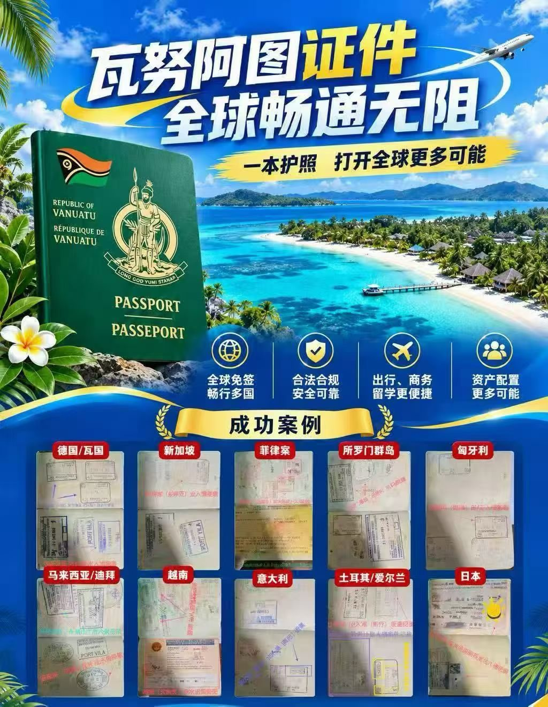

免签国家

按 Passport Index 2026：瓦努阿图护照大约 免签 46、落地签 41、电子旅行授权（eTA）5，合计约 90+ 个目的地可不提前办传统签证就能走（政策会变，出行前再核官方）。
一、免签（Visa-free，约 46）
等。
二、落地签 / 电子签 / eTA（不必提前去使馆，约 46）
常见包括：
等。天数多为 15–90 天，尼泊尔最长可到约 150 天。
三、必须提前签证（约 100+）
包括：
等。
完整逐国表见 Passport Index · 瓦努阿图。想了解某个国家的停留天数和材料，欢迎咨询。